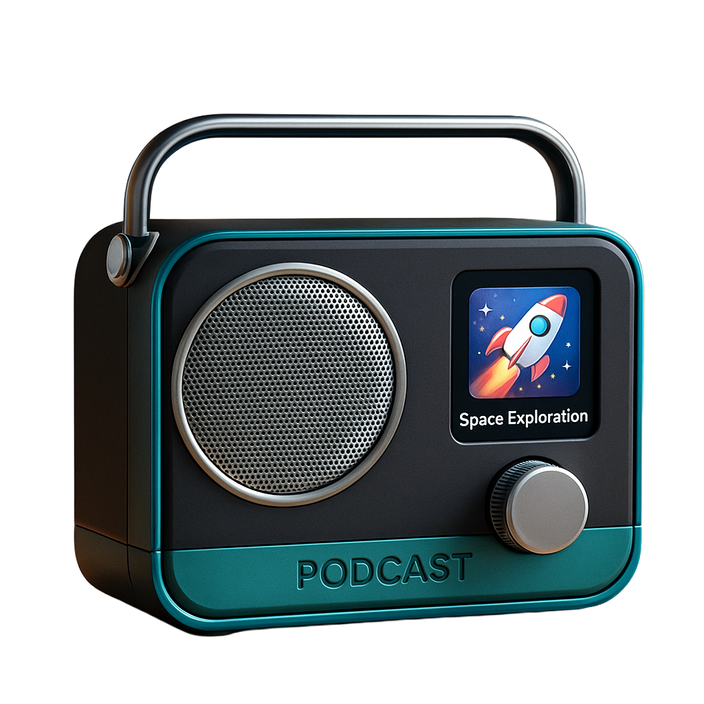

Spec. 01 · In-Distribution
Ambient Podcast Player Designed object · controlled lighting
2D · Source
PNG · render

podcast-player.png
render · sRGB
3D · TRELLIS.2 Output
GLB · interactive
podcast-player.glb
drop generated mesh here
podcast-player.glb
loading mesh…
podcast-player.glb
drag to rotate
Note
An AI render of a podcast player I'd been imagining: black-and-teal body, a circular speaker face, a small color screen reading Space Exploration, embossed PODCAST lettering, a metallic handle. An in-distribution test — designed object, controlled lighting, the kind of image the model should handle cleanly.